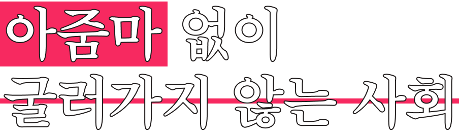
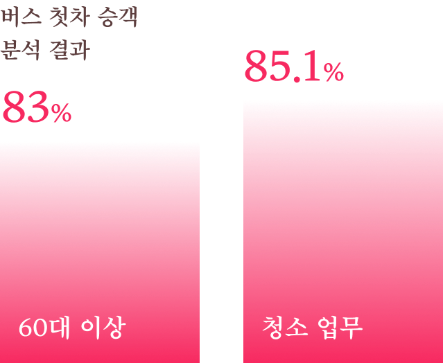
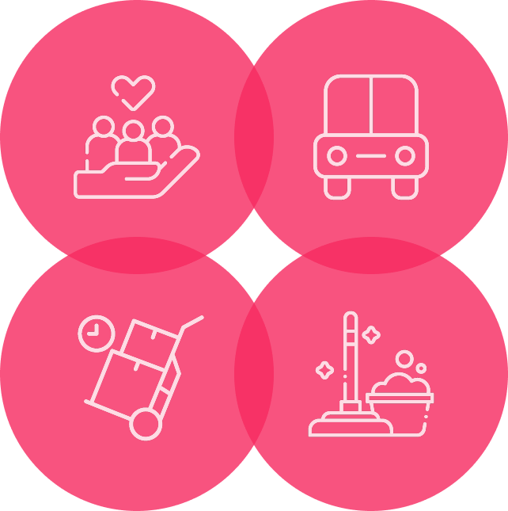
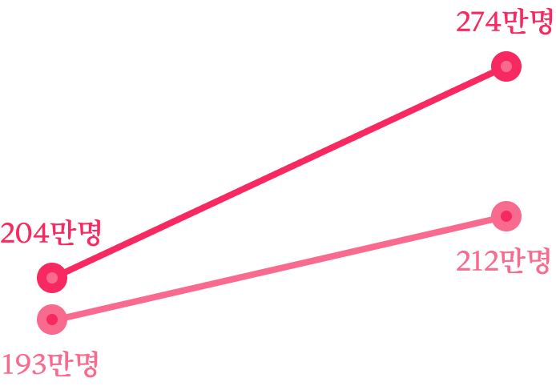
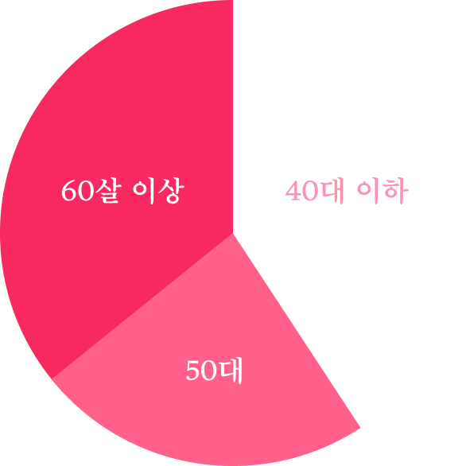

Social Issues

동도 트지 않은 꼭두새벽에 첫차를 탄 여성들
그들은 어디로 향할까요?
이옥자(79)씨는 청소 일을 시작한 지 30년이 됐습니다. 60대에 170만원 받았던 월급이 70대 들어 130만원으로 줄었지만, 그는 “이 일이 너무 좋다”고 합니다. “열심히 하면 결과가 바로 보이니까. 이 나이에 움직여서 밥 벌어 먹고 사는 게 얼마나 복입니까.”

청소업은 다른 직종에 비해 고령화가 심하고 여성 비율이 압도적으로 높습니다. 평균 연령은 61.1세(전체 노동자 평균연령 45세)이고, 청소업 내에서도 고령으로 갈수록, 남성에 비해 여성 노동자들의 시간당 임금과 월평균 수입이 낮아요.
구내식당에서 조리원으로 근무하는 김금란(63)씨는 5년째 서울대입구역에서 첫차를 타고 출근합니다. 직원 50여 명이 먹을 아침 식사를 준비해야 하기 때문입니다. 오전 6시부터 쌀 안치고, 나물 무치고, 반찬 몇 가지를 하고 나면 금세 8시. 아침 식사가 끝나면 곧바로 점심 식사 준비에 돌입해요.

특정 분야의 노동이 멈추면 다른 이들의 일상까지 무너지는 ‘결코 멈출 수 없는 노동’이 있습니다. 돌봄, 운송, 청소·환경, 배달 등으로 대표되는 ‘필수노동자’들입니다.

여성 필수노동자는 2015년 204만명에서 2022년 274만명까지 늘었습니다. 남성 증가 폭(193만명→212만명)과 견줘 3배 이상 많은 수치입니다. 필수노동자의 ‘여성화 현상’이 가속화하는 것입니다.

필수노동자 연령 분포는 60살 이상이 35.1%, 50대 24.2%로 50살 이상 중고령층이 절반 이상을 차지합니다. 여성 필수노동자는 임금 수준도 열악한 환경에 놓여있어요.
사회를 멈춰 세울 정도의 중요한 노동은 너무도 값싼 비용으로 유지돼 왔습니다. 모두가 꺼리는 적은 임금, 열악한 근무환경, 불안정한 일자리, 필수노동을 낮잡아 보는 편견을 고령층 여성들이 감수해 왔기 때문이죠. 마치 집을 꾸리고 지켜온 것처럼 고령층 여성은 이 사회를 받치고 지켜왔습니다.